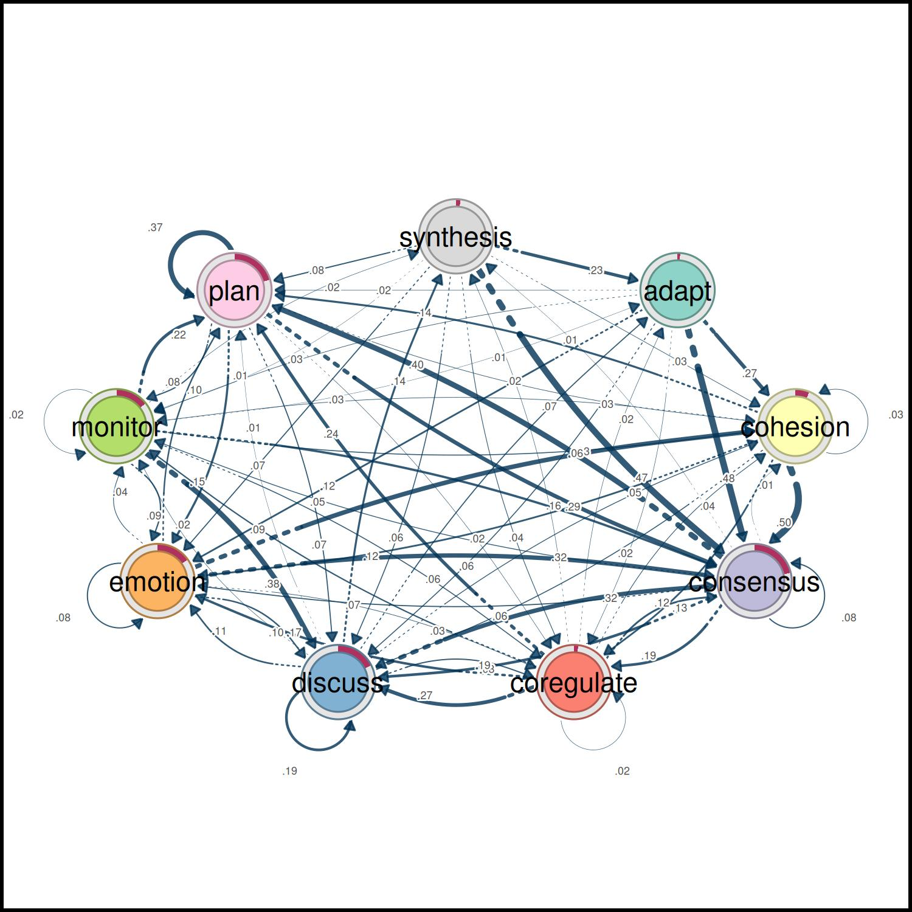
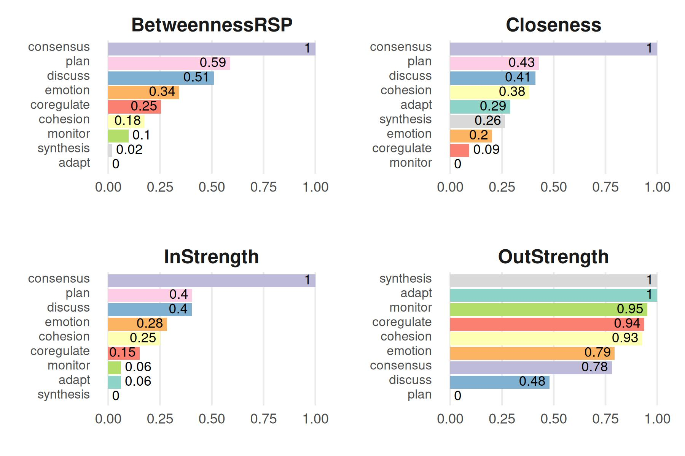

This vignette showcases some basic usage of the tna
package. For more tutorials, please visit the package website.
First we load the package.
We also load the group_regulation data available in the
package (see ?group_regulation for further information)
data("group_regulation", package = "tna")We build a TNA model using this data with the tna()
function. Each row of the data is one sequence of coded actions of a
student, and the model estimates the probability of moving from each
action to the next.
tna_model <- tna(group_regulation)To visualize the model, we can use the standard plot()
function.
plot(tna_model)
#> Registered S3 method overwritten by 'cograph':
#> method from
#> plot.tna_bootstrap tna
Printing the model shows the transition probabilities (row: from, column: to) and the initial state probabilities, which tell how the sequences tend to start.
print(tna_model, digits = 2)
#> State Labels :
#>
#> adapt, cohesion, consensus, coregulate, discuss, emotion, monitor, plan, synthesis
#>
#> Transition Probability Matrix :
#>
#> adapt cohesion consensus coregulate discuss emotion monitor plan
#> adapt 0.00000 0.273 0.477 0.022 0.059 0.120 0.033 0.016
#> cohesion 0.00295 0.027 0.498 0.119 0.060 0.116 0.033 0.141
#> consensus 0.00474 0.015 0.082 0.188 0.188 0.073 0.047 0.396
#> coregulate 0.01624 0.036 0.135 0.023 0.274 0.172 0.086 0.239
#> discuss 0.07137 0.048 0.321 0.084 0.195 0.106 0.022 0.012
#> emotion 0.00247 0.325 0.320 0.034 0.102 0.077 0.036 0.100
#> monitor 0.01117 0.056 0.159 0.058 0.375 0.091 0.018 0.216
#> plan 0.00097 0.025 0.290 0.017 0.068 0.147 0.076 0.374
#> synthesis 0.23466 0.034 0.466 0.044 0.063 0.071 0.012 0.075
#> synthesis
#> adapt 0.0000
#> cohesion 0.0035
#> consensus 0.0076
#> coregulate 0.0188
#> discuss 0.1410
#> emotion 0.0028
#> monitor 0.0161
#> plan 0.0018
#> synthesis 0.0000
#>
#> Initial Probabilities :
#>
#> adapt cohesion consensus coregulate discuss emotion monitor
#> 0.011 0.060 0.214 0.019 0.175 0.151 0.144
#> plan synthesis
#> 0.204 0.019summary() gives the network-level metrics of the model
as a table.
summary(tna_model)
#> # A tibble: 13 × 2
#> metric value
#> * <chr> <dbl>
#> 1 Node Count 9 e+ 0
#> 2 Edge Count 7.8 e+ 1
#> 3 Network Density 1 e+ 0
#> 4 Mean Distance 4.72e- 2
#> 5 Mean Out-Strength 1 e+ 0
#> 6 SD Out-Strength 8.07e- 1
#> 7 Mean In-Strength 1 e+ 0
#> 8 SD In-Strength 6.80e-17
#> 9 Mean Out-Degree 8.67e+ 0
#> 10 SD Out-Degree 7.07e- 1
#> 11 Centralization (Out-Degree) 1.56e- 2
#> 12 Centralization (In-Degree) 1.56e- 2
#> 13 Reciprocity 9.86e- 1The function centralities() computes various centrality
measures (see ?centralities for more information), which
identify the actions that the process passes through (betweenness), that
are reached quickly from the others (closeness), or that receive
(in-strength) or lead to (out-strength) many transitions. These measures
can also be visualized with the plot() function.
centrality_measures <- c("BetweennessRSP", "Closeness", "InStrength", "OutStrength")
cents_withoutloops <- centralities(
tna_model,
measures = centrality_measures,
loops = FALSE,
normalize = TRUE
)
plot(cents_withoutloops, ncol = 2)
More tutorials
Package articles · sonsoles.me/tna
- Getting started with tna — build, plot, and summarize a transition network
-
Preparing
data — turn event logs into sequences with
prepare_data() - A showcase of the main functions — models, centralities, communities, and validation
- Grouped sequence data — build and compare networks of groups
- Cliques and communities — find the densely connected states
- Frequency-based TNA — model transition counts instead of probabilities
- Attention TNA — accumulate transitions across temporal distances
- Validating a transition network — Markov order, bootstrap, case-dropping, reliability, and permutation tests
- Function reference sheet — every function with its arguments and an example
Tutorials · sonsoles.me
- A comprehensive TNA tutorial — an updated walkthrough of transition network analysis
- Data preparation — from raw event data to sequences
- Comparing models — network comparison of TNA models
- Clustering — discover and analyze clusters of sequences
- Group analysis — permutation tests, bootstrapping, and clusters
Book chapters · Advanced Learning Analytics Methods
- Mapping relational dynamics with TNA — a primer and tutorial
- Frequency transition network analysis — a primer and tutorial on FTNA
- Mining patterns and clusters with TNA — a heterogeneity approach
Dynalytics · dynasite.org
- Package sites — documentation of the R packages of the Dynalytics framework
- Tools — interactive web apps, jamovi, and Python
- CarmNotes — single-file notebooks that run the analyses in the browser, even offline
- Selected articles — publications on the framework and its methods